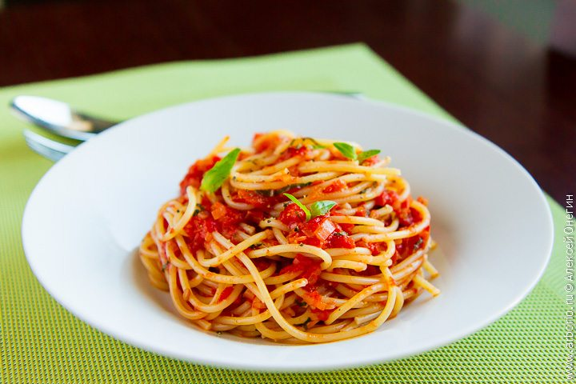

Tomato Pasta

Description
Tomato Pasta is a simple and delicious Italian-inspired dish made with pasta, tomatoes, garlic, olive oil, and herbs. It is quick to prepare and perfect for lunch or dinner.
Ingredients
- 250 g pasta
- 2 tablespoons olive oil
- 3 cloves garlic, minced
- 400 g canned tomatoes
- Salt to taste
- Black pepper to taste
- 1 teaspoon dried basil
- Fresh parsley (optional)
- Grated Parmesan cheese (optional)
Steps
- Bring a large pot of salted water to a boil.
- Cook the pasta according to the package instructions.
- Heat the olive oil in a pan over medium heat.
- Add the garlic and cook for about 1 minute until fragrant.
- Add the tomatoes, basil, salt, and black pepper.
- Simmer the sauce for 10–15 minutes.
- Drain the pasta and add it to the sauce.
- Toss everything together until the pasta is well coated.
- Serve with fresh parsley and grated Parmesan cheese if desired.
Home